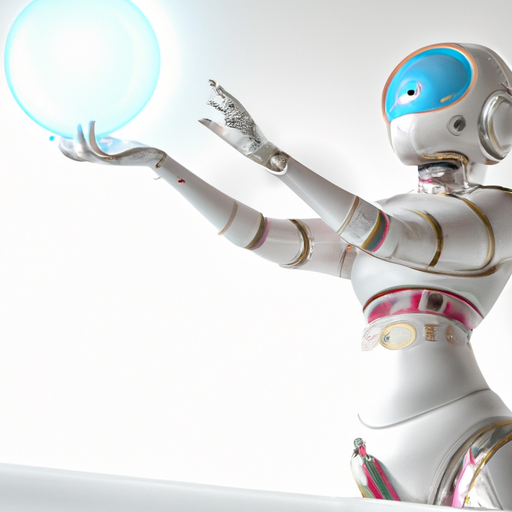

The future of AI and web3 collectibles

The future of AI and web3 collectibles
The future of AI and web3 collectibles is an exciting and ever-evolving space. As web3 technologies continue to advance and evolve, so too will the way we think about digital collectibles and the way we interact with them.
With the rise of AI, digital assistants, and bots, there is an incredible potential for the web3 space to be used in a new and exciting way. For example, digital collectibles could be used to create AI-driven digital assistants that could help you manage, organize, and curate your digital collection. Such a digital assistant could help you make smarter decisions when it comes to investing in, trading, and collecting digital collectibles.
AI and digital assistants could also be used to create personalized experiences for web3 collectors. For example, a digital assistant could be programmed to recommend specific digital collectibles based on a collector’s preferences and interests. This could enable web3 collectors to expand their collections in a more informed and thoughtful way.
Furthermore, AI can be used to power decentralized applications that would enable web3 collectors to interact with their digital collections in a more secure and seamless way. Such applications could help web3 collectors to better manage and control their digital collections, enabling them to maximize the value of their digital assets.
The possibilities for AI, digital assistants, and web3 collectibles are incredibly exciting and will only continue to evolve as the technology continues to progress. We are only just beginning to scratch the surface of what is possible in the web3 space, and the future looks incredibly promising.